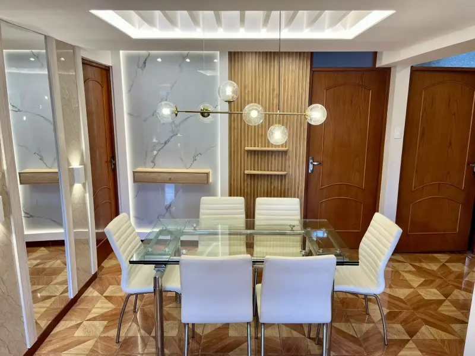

Diseña tu espacio con IA
Sube una foto de tu ambiente, elige un estilo y mira en segundos una propuesta de cómo podría transformarse.
1 · Sube tu foto
2 · Tipo de ambiente
3 · Estilo
4 · Gama de color
5 · Acabado de mobiliario
6 · Formato de cocina
7 · Distribución
8 · Mesada / tablero
9 · Elemento protagónico
El foco visual que quieres destacar.
La primera vez se te pedirá iniciar sesión en Puter, el servicio que procesa la imagen en esta demo. Tu foto solo se usa para generar la propuesta.
Tu nueva propuesta aparecerá aquí
Funciona mejor con fotos horizontales, bien iluminadas y tomadas desde una esquina del ambiente.
Analizando tu espacio…
Puede tardar entre 10 y 40 segundos.¿Te gusta cómo podría quedar?
Nuestro equipo puede convertir esta idea en un proyecto real, diseñado a medida para tu espacio.
Imagen referencial generada con inteligencia artificial. El diseño final, los materiales y el presupuesto se definen tras la evaluación técnica de tu espacio.